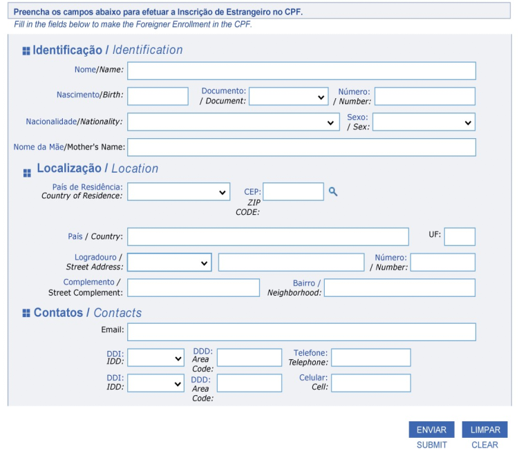

<section id="about" class="about">
  <div class="container">

    <div class="row">

      <div class="col-xl-6 col-lg-6 icon-boxes d-flex flex-column align-items-stretch justify-content-center py-5 px-lg-5">
        <div class="foreigner_cpf">
          <h3 class="text-center">CPF para Estrangeiros</h3>
        <p>No Brasil, um dos documentos de identificação mais importantes é o CPF (Cadastro de Pessoa Física), essencial para fazer cadastro e acessar diversos serviços e benefícios. Por isso, você Nômade Digital que deseja passar uma temporada no Brasil, principalmente no Ceará, pode solicitar o CPF Estrangeiro. A solicitação pode ser feita online no site:</p>

        <a href="https://servicos.receita.fazenda.gov.br/Servicos/CPF/InscricaoCpfEstrangeiro/default.asp" target="_blank" class="btn btn-info mb-4">Saiba Mais</a>

        <p>Basta preencher o formulário que aparecerá para realizar a solicitação, podendo ser feito antes de chegar ao Brasil. Porém, o site está apresentando um problema ao traduzir o formulário e por isso resolvemos auxilia-los no preenchimento do formulário, com a tradução das sessões na imagem dessa página.
        </p>
        </div>
      </div>
      <div class="col-xl-5 col-lg-6 d-flex imagem">
        <div class="img-wrap">
          
          <div class="img-info">
            <h4>CPF Estrangeiro</h4>
            <p>Formulário de cadastro</p>
            <!--<div class="portfolio-links">
              <a href="../../../assets/imgs/identificando.png" data-gallery="portfolioGallery" class="portfolio-lightbox" title="CPF"><i class="bi bi-file-earmark"></i></a>
            </div>-->
          </div>
        </div>
      </div>
    </div>

  </div>
</section><!-- End About Section -->
